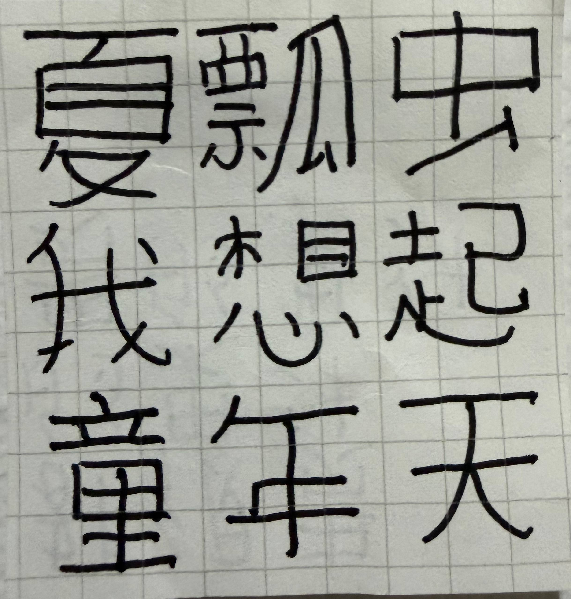
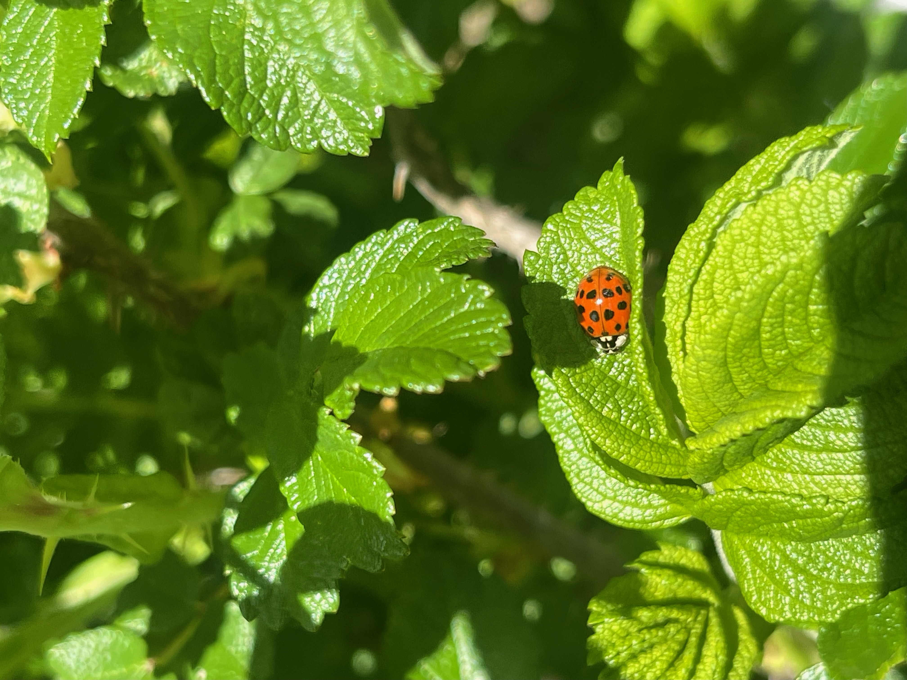

In late 2025 I felt, and frankly still feel as of mid-2026, that I was not using my brain enough now that I had graduated college. I needed to be learning something. In conversation with friends I noticed that many of my friends from high school and college spoke (Mandarin) Chinese. I asked a friend of mine what the best app for starting to learn Chinese was, he recommended "ImmersiveChinese" and I downloaded it and started using the free version.
I did not enjoy my oddly poorly taught and propaganda filled Hebrew classes in elementary and middle school and as much as I enjoy music in the language, I did not overmuch enjoy my Spanish classes in high school and college. I lacked the discipline and drive for truly acquiring a language. However, something here was a bit different. The format of the app and having nothing else to really use my brain on meant something clicked and I started having a blast gradually learning the language. A month or so later, at the start of 2026, I met my current teacher on the J train at midnight. He was explaining the word 做 (zuò) to someone and I butted in and said, with very poor pronunciation, 《你好，你们说中文吗》("Hello, are you two speaking Chinese?").
Anyways I've been learning at a sufficient pace (not that I couldn't be more disciplined with my practicing and thereby move faster. I certainly haven't been putting in the hour+ a day that would really accelerate me) and feeling more comfortable with the basics of the language. The other day a friend sent me a picture of a ladybug resting on a very vivid green leaf. Some subconscious process was activated. I had not seen a ladybug in a very long time. I used to see them all over Los Angeles and the Bay Area as a child.
In my prior lesson my teacher had written down a classic Chinese poem, 静夜思 (Quiet Night Thought) for me which had got my mind ticking. The sub-Proustian remembrances of Summer days in the late 2000s caused gears to turn.
So, for the first time to my recollection, I wrote a poem without being prompted to do so. In Chinese.
Very amateurish attempt and I had to look up four of the characters, but it felt nice to put together:

I felt quite happy with this so I sent it to a few friends. They all appreciated my amateurish stylings. Like a barely-precocious toddler. The next day I got curious and read up on the actual precepts of Chinese poetry. Typically poems are four lines of five or seven characters, follow an AABA rhyme scheme, and for really strict classical poetry, have a meter of different tones that doesn't even necessarily fit the tones used in modern Mandarin.
One friend in reacting to the poem pointed this out, which prompted me to refine it:

I am moderately pleased with this effort. Maybe now I am at the level of an actually precocious toddler. Four lines of five characters following the AABA rhyme scheme and broadly aligning with classical themes. I mean if you think about it I did in fact just rip off Quiet Night Thought but it was still a satisfying creative puzzle and a nice benchmark of where I am in my Chinese learning.
